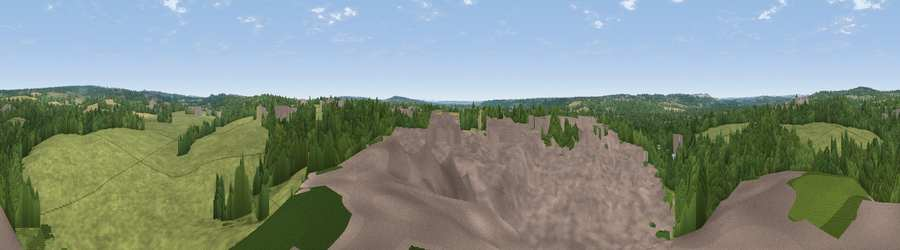

Viewpoint near Timsbury
#38427 in England · top 49% of its area beats it · near Timsbury · access?Where it is
The exact computed spot (SU 35975 24075). Click the marker for map links.
Public access: no public right of way or access land is recorded at this exact spot — it may be on private land. Computed from Natural England's CRoW access layer and OpenStreetMap rights of way — not the legal definitive map. Always verify locally.
The view, rendered

A 360° render of this exact spot computed from the terrain model, tree cover and land cover — summer colours, afternoon light, calibrated against photographs of famous viewpoints. Real trees, hedges and buildings will differ in detail.
The panorama
Grey silhouette: terrain skyline in each direction (720 bearings, Earth curvature and refraction included). Dashed green: skyline with trees (+15 m) and buildings (+8 m) as obstacles. Blue strip: how far the ground is visible on each bearing.
Where the view opens
Wedge length = distance to the farthest visible ground on that bearing (vegetation-aware). Rings at 10, 25 and 50 km.
What fills the view
42% grassland · 35% woodland · 18% built-up · 4% cropland · 1% water
Angular shares of the visible panorama (visual magnitude), not map area. Landscape diversity 0.53 (0–1 Shannon).
Key numbers
More beautiful places nearby
The staircase of upgrades: each row has a higher view potential than everything closer. Driving times are estimates from straight-line distance, calibrated against real road routing — check an actual route before setting out.
| Place | Direction | Drive | Score |
|---|---|---|---|
| Broom Hill | NE · 3 km | ~8 min | 28.7 |
| Viewpoint near Mottisfont | NNW · 4 km | ~9 min | 29.9 |
| Viewpoint near Mottisfont | NNW · 5 km | ~10 min | 37.2 |
| Viewpoint near King's Somborne | NNE · 6 km | ~13 min | 44.5 |
| Violet Hill | ENE · 6 km | ~13 min | 45.5 |
| Viewpoint near King's Somborne | NE · 6 km | ~13 min | 60.8 |
| Viewpoint near Stockbridge | NNE · 12 km | ~22 min | 63.3 |
| Beacon Hill | E · 24 km | ~40 min | 71.7 |
51.01493, -1.48854 · source: screening · position refined by local search. Computed location — check access rights before visiting.